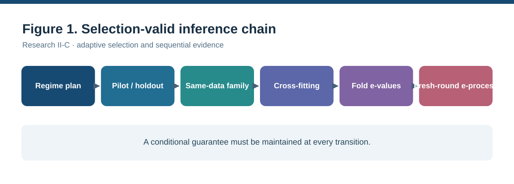
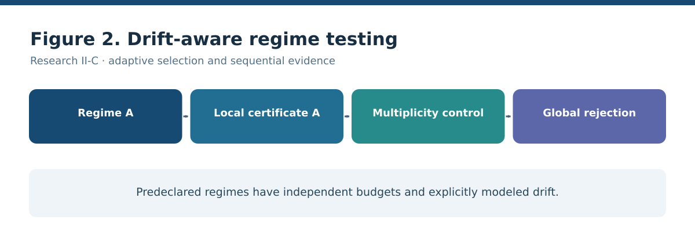
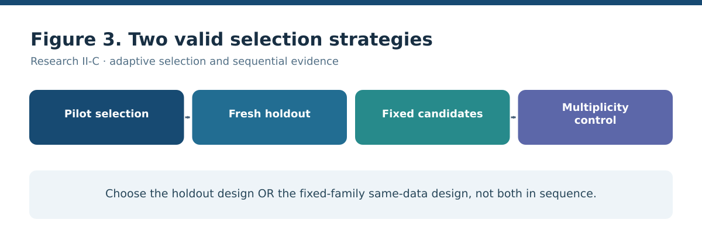
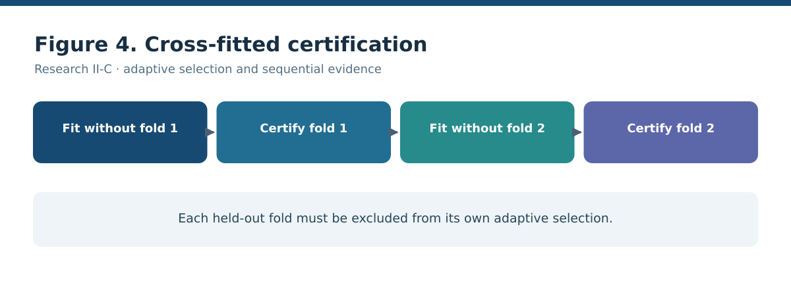
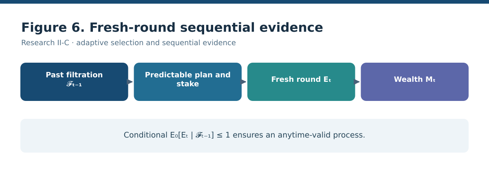
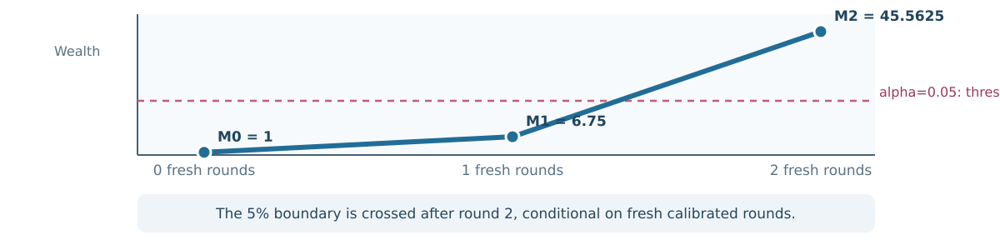

Research II-C: selection-valid and anytime-valid evidence
Working paper: Selection-Valid and Anytime-Valid Evidence after Adaptive Model Search: Holdout Stratification, Cross-Fitting, E-Value Aggregation, and Sequential E-Processes. This is submission-stage documentation, not peer review, acceptance, or empirical control-system validation.
What the method protects
The framework considers different forms of adaptive model criticism: predeclared regimes, pilot/holdout selection, fixed finite-family searches, cross-fitting with own-fold exclusion, aggregation of valid fold-level e-values, and sequential accumulation across genuinely fresh rounds. The significance is a guarded composition of established methods around a declared model-rejection certificate.
| Stage | Non-negotiable validity condition |
|---|---|
| Holdout certification | Certification data must remain valid conditional on the pilot-selected design. |
| Cross-fitting | Own-fold exclusion and the declared independent data units must be respected; fold e-values may be dependent. |
| Aggregation | Prespecified nonnegative convex weights preserve an e-value's null expectation bound. |
| Sequential monitoring | Each round must retain conditional null validity given the past; stakes must be predictable. |
Exact arithmetic versus simulated operating characteristics
A reported exact checkpoint has round e-value 25/2. With a predictable half-stake, the round factor equals 27/4, and two valid fresh rounds give wealth 729/16 = 45.5625, above the 5% crossing boundary of 20. The arithmetic alone is not a proof that a particular empirical certificate meets the conditional-null assumptions.
A separate idealized null simulation used 20,000 seeded sequences and 100 fresh rounds. It observed 545 crossings of the threshold 20, an estimated frequency of 2.725% (Wilson 95% interval approximately 2.508% to 2.960%). The simulation tests aggregation and repeated inspection under an assumed valid Bernoulli fold null, not the full latent-model implementation or a feedback controller. Reproducible simulation source.
Illustrative sensitivity to stronger fold-level signals
A separate seeded experiment specified the fold-level rejection probability directly, keeping two folds, equal e-value aggregation, half-stakes, a 100-round horizon, and 20,000 sequences per scenario. Observed anytime threshold-crossing frequencies were 519/20,000 (2.595%) for the null-generating p=0.04 scenario; 3,273/20,000 (16.365%) when p=0.08; and 10,479/20,000 (52.395%) when p=0.12. These are illustrative operating characteristics under stipulated Bernoulli laws, not detection power against a modeled latent-system alternative, controller performance, or a proof of calibration. The auxiliary sensitivity script records seed 20261024 and complete simulation logic.
Control engineering relevance and its limits
The manuscript proposes adaptive controller selection on pilot data followed by sensor-model assessment on independent reset episodes. This application has not yet been executed. Rejecting a sensor-model family is not evidence by itself that a controller is unsafe, unstable, or suboptimal. Observations within a single closed-loop trajectory generally cannot be treated as independent episodes.
Next empirical validation milestone
The model-specific validation protocol specifies null and alternative simulator requirements, conditional and sequential calibration tests, independent reset episodes, sample accounting, and reporting gates for a real controlled-system study. All those model-specific results remain unrun. The current Bernoulli studies should not be interpreted as substitutes.
Research figures
Seven matched, scalable vector figures use one typographic system and a consistent visual grammar. Diagrams illustrate the declared validity conditions; they are not observed experimental results.






Literature and citations
The accompanying manuscript contains 33 numbered scholarly references, cited in order of first introduction. Its foundations include e-value calibration and combination, safe anytime-valid inference, universal inference, and work on post-selection inference, cross-fitting, sequential confidence sequences, dependent observations, and feedback-system monitoring. The research bibliography is part of the manuscript and remains subject to line-by-line bibliographic verification.
Complete working bibliography
The paper cites 33 scholarly sources. This bibliography follows the manuscript's numbering; final metadata and DOI verification is ongoing.
Show all 33 references
- Cox, D. R. (1975). A note on data-splitting for the evaluation of significance levels. Biometrika, 62(2), 441-444.
- Chernozhukov, V., Chetverikov, D., Demirer, M., Duflo, E., Hansen, C., Newey, W., and Robins, J. (2018). Double/debiased machine learning for treatment and structural parameters. The Econometrics Journal, 21(1), C1-C68.
- Vovk, V., and Wang, R. (2021). E-values: Calibration, combination, and applications. The Annals of Statistics, 49(3), 1736-1754.
- Shafer, G., Shen, A., Vereshchagin, N., and Vovk, V. (2011). Test martingales, Bayes factors and p-values. Statistical Science, 26(1), 84-101.
- Ville, J. (1939). Etude critique de la notion de collectif. Paris: Gauthier-Villars.
- Howard, S. R., Ramdas, A., McAuliffe, J., and Sekhon, J. S. (2021). Time-uniform, nonparametric, nonasymptotic confidence sequences. The Annals of Statistics, 49(2), 1055-1080.
- Wasserman, L., Ramdas, A., and Balakrishnan, S. (2020). Universal inference. Proceedings of the National Academy of Sciences, 117(29), 16880-16890.
- Berk, R., Brown, L., Buja, A., Zhang, K., and Zhao, L. (2013). Valid post-selection inference. The Annals of Statistics, 41(2), 802-837.
- Lee, J. D., Sun, D. L., Sun, Y., and Taylor, J. E. (2016). Exact post-selection inference, with application to the lasso. The Annals of Statistics, 44(3), 907-927.
- Fithian, W., Sun, D., and Taylor, J. (2014). Optimal inference after model selection. arXiv:1410.2597.
- Benjamini, Y., and Hochberg, Y. (1995). Controlling the false discovery rate: A practical and powerful approach to multiple testing. Journal of the Royal Statistical Society: Series B, 57(1), 289-300.
- Holm, S. (1979). A simple sequentially rejective multiple test procedure. Scandinavian Journal of Statistics, 6(2), 65-70.
- Romano, J. P., and Wolf, M. (2005). Exact and approximate stepdown methods for multiple hypothesis testing. Journal of the American Statistical Association, 100(469), 94-108.
- Meinshausen, N., Meier, L., and Buhlmann, P. (2009). P-values for high-dimensional regression. Journal of the American Statistical Association, 104(488), 1671-1681.
- Barber, R. F., and Candes, E. J. (2015). Controlling the false discovery rate via knockoffs. The Annals of Statistics, 43(5), 2055-2085.
- Candes, E., Fan, Y., Janson, L., and Lv, J. (2018). Panning for gold: Model-X knockoffs for high dimensional controlled variable selection. Journal of the Royal Statistical Society: Series B, 80(3), 551-577.
- van der Laan, M. J., and Rose, S. (2011). Targeted Learning: Causal Inference for Observational and Experimental Data. Springer.
- Robins, J. M., Rotnitzky, A., and Zhao, L. P. (1994). Estimation of regression coefficients when some regressors are not always observed. Journal of the American Statistical Association, 89(427), 846-866.
- Neyman, J. (1979). C(alpha) tests and their use. Sankhya: The Indian Journal of Statistics, Series A, 41(1/2), 1-21.
- Shafer, G., and Vovk, V. (2019). Game-Theoretic Foundations for Probability and Finance. Wiley.
- Ramdas, A., Grunwald, P., Vovk, V., and Shafer, G. (2023). Game-theoretic statistics and safe anytime-valid inference. Statistical Science, 38(4), 576-597.
- Howard, S. R., Ramdas, A., McAuliffe, J., and Sekhon, J. S. (2020). Time-uniform Chernoff bounds via nonnegative supermartingales. Probability Surveys, 17, 257-317.
- Darling, D. A., and Robbins, H. (1967). Confidence sequences for mean, variance, and median. Proceedings of the National Academy of Sciences, 58(1), 66-68.
- Wald, A. (1945). Sequential tests of statistical hypotheses. The Annals of Mathematical Statistics, 16(2), 117-186.
- Doob, J. L. (1953). Stochastic Processes. Wiley.
- Hoeffding, W. (1963). Probability inequalities for sums of bounded random variables. Journal of the American Statistical Association, 58(301), 13-30.
- Azuma, K. (1967). Weighted sums of certain dependent random variables. Tohoku Mathematical Journal, 19(3), 357-367.
- McDiarmid, C. (1989). On the method of bounded differences. In Surveys in Combinatorics 1989, London Mathematical Society Lecture Note Series 141, 148-188. Cambridge University Press.
- Kunsch, H. R. (1989). The jackknife and the bootstrap for general stationary observations. The Annals of Statistics, 17(3), 1217-1241.
- Politis, D. N., and Romano, J. P. (1994). The stationary bootstrap. Journal of the American Statistical Association, 89(428), 1303-1313.
- Ljung, L. (1999). System Identification: Theory for the User (2nd ed.). Prentice Hall.
- Astrom, K. J., and Murray, R. M. (2008). Feedback Systems: An Introduction for Scientists and Engineers. Princeton University Press.
- Mesbah, A. (2016). Stochastic model predictive control: An overview and perspectives for future research. IEEE Control Systems Magazine, 36(6), 30-44.
Browse the numbered reference list on GitHub.
Audit trail
Read the journal submission audit, the sequential e-process theorem record, and the repository reproducibility guide. The draft manuscript still requires full proof checking, bibliographic verification, and a performed controller experiment before claims of empirical engineering performance would be justified.